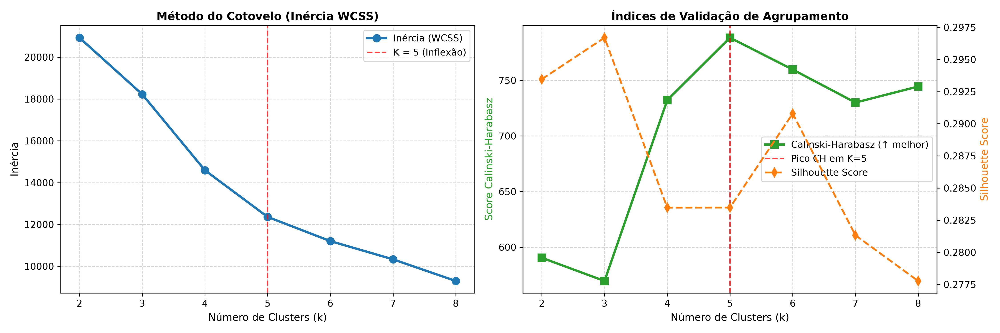
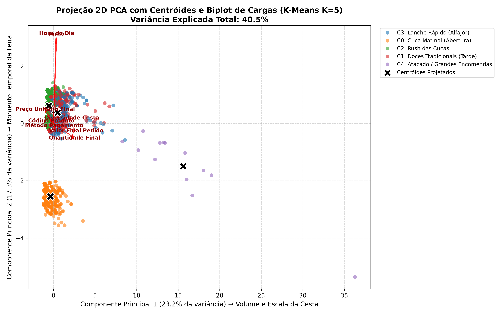
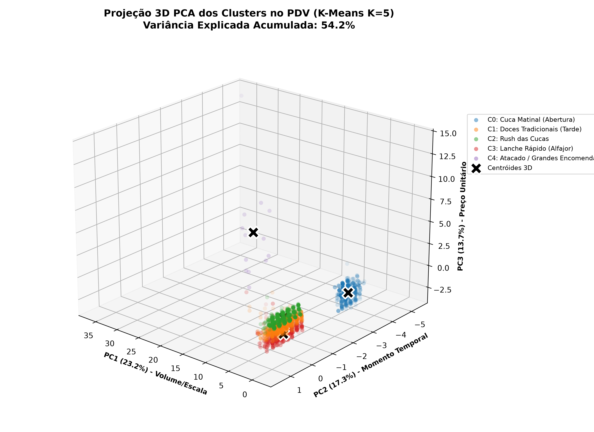
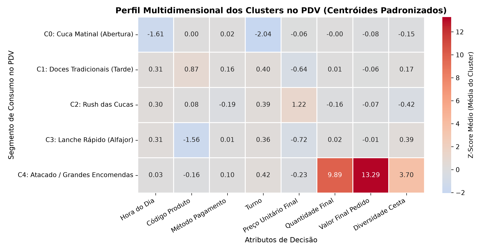
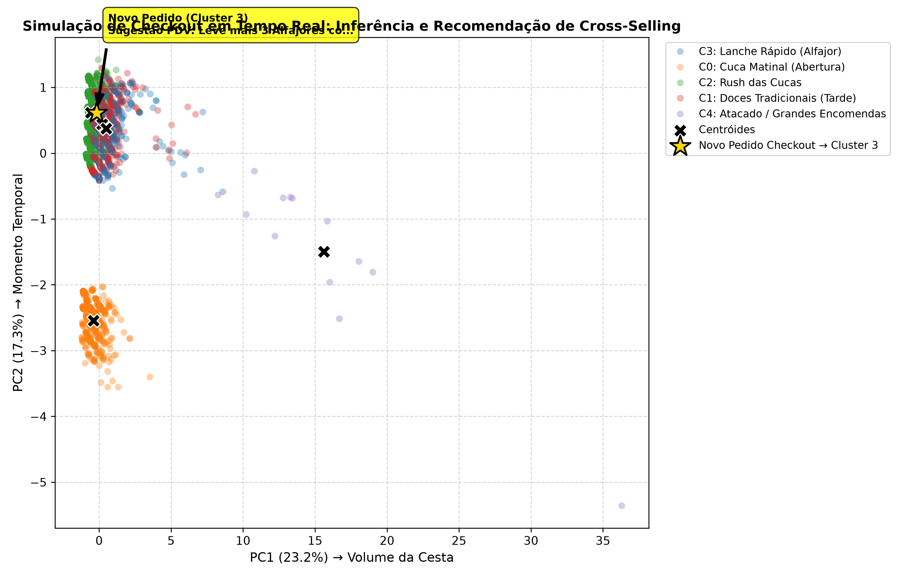

Instituição: Faculdade Antonio Meneghetti (AMF)
Curso: Bacharelado em Sistemas de Informação
Disciplina: Inteligência Artificial II (2026/02)
Docente: Prof. Rhauani Fazul
Discente: Lucas
Repositório Oficial: https://github.com/SIS-AMF/2026-2_trablho-g1-cd-ai2
O dataset do projeto está versionado no repositório GitHub do trabalho (https://github.com/SIS-AMF/2026-2_trablho-g1-cd-ai2), estruturado em dois artefatos centrais:
studing/KalimentosFeirasVendas.csv, extraído por meio da consulta SQL relacional de produção get_dataset.sql.base.csv, gerado pelo pipeline de engenharia e saneamento de dados com 16 colunas finais íntegras.Os dados foram extraídos diretamente do banco de dados relacional (PostgreSQL) do sistema de Ponto de Venda (PDV) da empresa de confeitaria e panificação colonial KAlimentos. Os registros cobrem as vendas efetuadas em estandes de 12 feiras agropecuárias e gastronômicas regionais no Estado do Rio Grande do Sul (destacando-se Expointer, Expo Afubra, ExpoDireto, Wolksfest Agudo e EXPOBENTO) ao longo do período de março a setembro de 2026.
itens_pedido vinculados ao pedido_id e a eventos financeiros).America/Sao_Paulo.As transações de feiras agropecuárias são realizadas no balcão presencial sem qualquer identificador ou cadastro individual do cliente (vendas anônimas). O dataset registra com precisão os produtos comercializados, quantidades, preços unitários, descontos, subtotal, meio de pagamento e carimbo de data/hora. Essa estrutura reflete integralmente o contexto operacional real do PDV, sendo estritamente adequada para a formulação de modelos não supervisionados de agrupamento de pedidos para identificar comportamentos de consumo da cesta e janelas temporais de venda.
A KAlimentos opera sob regime de alta rotatividade de público em feiras itinerantes. O atendimento de balcão é dinâmico, sem cadastro prévio de clientes e com equipe de atendimento focada na agilidade operacional. Nesse cenário, inexiste histórico individual de recompra ou perfil demográfico, demandando que qualquer estratégia de inteligência seja baseada exclusivamente nas características observáveis do próprio pedido em andamento (horário, turno, itens na cesta e valores envolvidos).
O objetivo central consiste em classificar e agrupar pedidos transacionados no PDV a partir de suas características contextuais (momento do dia), composição da cesta (volume, quantidade de itens, diversidade) e magnitude monetária (preço unitário e valor total do pedido), identificando tipologias homogêneas de consumo.
Como hipótese de uso prático futuro, os agrupamentos obtidos subsidiarão um motor de recomendação de produtos no checkout caso a operação de vendas venha a migrar para um canal de e-commerce. Ao submeter um carrinho em tempo real no fechamento da compra, o sistema infere o cluster correspondente ao pedido e dispara gatilhos de cross-selling com produtos complementares e descontos progressivos específicos daquele perfil.
A tarefa enquadra-se estritamente como Aprendizado Não Supervisionado (Unsupervised Learning), focada em Agrupamento / Clusterização (Clustering), sem variáveis-alvo pré-rotuladas.
A exploração inicial dos dados brutos validou a invariante contábil mandatória de fechamento de caixa:
Foram eliminadas colunas operacionais que não agregam valor preditivo ou que apresentavam ruído cadastral:
evento_data_inicio e evento_data_fim: Metadados administrativos do calendário das feiras que não influenciam a cesta imediata.item_pedido_user_id e pedido_vendedor: Nos estandes de feira, múltiplos operadores de caixa utilizam rotativamente o mesmo terminal sob login compartilhado, tornando o identificador de usuário espúrio e não correlacionado ao cliente final.quantidade_item == 0) decorrentes de cancelamentos operacionais no PDV (um item de alfajor na Expo Afubra e uma rapadura na EXPOBENTO). Em ambos os pedidos, a remoção do registro zerado manteve intacto o subtotal contábil de R$ 20,00 e corrigiu o indicador de diversidade da cesta (qnt_repeticoes de 2 para 1), preservando a totalidade dos 2.457 pedidos únicos e consolidando a base em 3.113 itens válidos.Na conferência da relação ∑ (quantidade × preço_unitário) == pedido_subtotal:
Para sanar o problema sem recorrer a constantes ou números mágicos arbitrários, implementou-se um mecanismo estatístico por proporção de escala (k) ancorado na mediana do SKU:
quantidade_ajustada, preco_unitario_ajustado e tipo_escala.Foram geradas variáveis analíticas a partir do carimbo temporal e da estrutura dos pedidos:
dia_horario: Hora inteira da venda (0 a 23).dia_semana: Dia da semana (0=Segunda a 6=Domingo).mes: Mês da realização da feira (3 a 9).turno: Segmentação temporal em Madrugada (0h–5h), Manhã (6h–11h), Tarde (12h–17h) e Noite (18h–23h).qnt_repeticoes: Contagem de linhas associadas ao mesmo pedido_id, mensurando a diversidade da cesta de compras.Variações de cadastro textual de um mesmo produto foram unificadas em famílias semânticas padronizadas:
ALFAJOR_PRETO, ALFAJOR_BRANCO, ALFAJOR_(CAIXA_X16) → ALFAJORCUCA_ENROLADA_DE_AMENDOIM, CUCA_ENROLADA_DE_CHOCOLATE → CUCA_ENROLADARAPADURA_DE_MELADO, RAPADURA_DE_MELADO_GRÃO_MOÍDO → RAPADURA_MELADORAPADURA_ASSADA, RAPADURA_ASSADA_(PACOTE_X6) → RAPADURA_ASSADABOLACHA_DE_MANTEIGA, BOLACHA_DE_MILHO → BOLACHAAMENDOIM_SALGADO_E_TEMPERADO → AMENDOIM_TEMPERADOLabelEncoder independente para nome_produto (prod_code), metodo_pagamento (metodo_code) e turno (turno_code).dia_horario, prod_code, metodo_code, turno_code, preco_unitario_final, quantidade_final, valor_final_pedido, qnt_repeticoes_num) foram submetidas ao StandardScaler (μ = 0, σ = 1), impedindo que magnitudes monetárias ou volumétricas distorcessem o cálculo das distâncias euclidianas.Tratando-se de Aprendizado Não Supervisionado para descoberta da estrutura latente e dos padrões naturais de compra da base histórica, o modelo K-Means foi treinado sobre o conjunto total consolidado (N = 3.113 itens em 2.457 pedidos).
A aplicação de partições clássicas de treino e teste supervisionadas (ex.: 80/20) não é recomendada para este contexto analítico porque o particionamento arbitrário fragmentaria subpopulações raras e legítimas da operação (como o cluster de Atacado e Encomendas Corporativas, que possui 13 transações representativas), prejudicando a definição precisa dos centróides globais.
random_state=42 com n_init=10.Adotou-se o algoritmo K-Means (sklearn.cluster.KMeans), seguindo os fundamentos apresentados nas diretrizes didáticas da disciplina.
n_clusters=5: Número ótimo de agrupamentos definido pela análise experimental.random_state=42: Garantia de reprodutibilidade estocástica na inicialização.n_init=10: Número de inicializações independentes do algoritmo k-means++ para seleção do melhor centróide inicial em termos de inércia mínima.Para viabilizar a interpretabilidade geométrica das 8 dimensões padronizadas, utilizou-se a técnica de Análise de Componentes Principais (PCA):
n_components=2): Projeção linear no plano cartesiano combinada com o Biplot de Cargas Fatoriais (loadings).n_components=3): Projeção tridimensional para isolar a sensibilidade a preços unitários e verificar a dispersão espacial dos agrupamentos.A Tabela 1 apresenta a progressão das 4 métricas calculadas na esteira de otimização de K:
Tabela 1: Métricas de Validação de Clusterização para K ∈ [2, 8]
| K | Inércia (WCSS) | Silhouette Score | Calinski-Harabasz | Davies-Bouldin |
|---|---|---|---|---|
| 2 | 20.931,12 | 0,2935 | 590,49 | 1,3120 |
| 3 | 18.226,93 | 0,2967 | 569,64 | 1,6175 |
| 4 | 14.593,46 | 0,2835 | 732,19 | 1,3118 |
| 5 | 12.362,00 | 0,2835 | 788,31 (Ápice) | 1,2293 |
| 6 | 11.205,22 | 0,2908 | 759,68 | 1,1961 |
| 7 | 10.332,82 | 0,2813 | 730,00 | 1,1816 |
| 8 | 9.298,47 | 0,2778 | 744,44 | 1,1079 |
reports/figures/01_otimizacao_k_cotovelo_silhueta.png.
Para fundamentar as dimensões latentes projetadas, a Tabela 2 sintetiza as cargas fatoriais (w1, w2, w3) e a contribuição relativa de cada atributo original sobre as três primeiras componentes principais (limiar teórico de dominância uniforme: superior a 12,5%).
Tabela 2: Matriz de Cargas Fatoriais e Contribuição Relativa do PCA Tridimensional
| Atributo Original | Carga PC1 | Contrib. PC1 | Carga PC2 | Contrib. PC2 | Carga PC3 | Contrib. PC3 |
|---|---|---|---|---|---|---|
| Hora do Dia | +0,0867 | 0,75% | +0,6983 | 48,77% | -0,0576 | 0,33% |
| Código Produto | -0,0595 | 0,35% | +0,0182 | 0,03% | +0,4216 | 17,78% |
| Método Pagamento | +0,0164 | 0,03% | -0,0187 | 0,03% | -0,3096 | 9,59% |
| Turno | +0,0673 | 0,45% | +0,6938 | 48,14% | +0,0138 | 0,02% |
| Preço Unitário Final | -0,2252 | 5,07% | +0,1086 | 1,18% | +0,7011 | 49,15% |
| Quantidade Final | +0,5656 | 31,99% | -0,1153 | 1,33% | +0,2628 | 6,91% |
| Valor Final Pedido | +0,6096 | 37,17% | -0,0593 | 0,35% | +0,2937 | 8,63% |
| Diversidade Cesta | +0,4918 | 24,19% | +0,0406 | 0,16% | -0,2757 | 7,60% |
Interpretação Semântica dos Três Eixos:
Valor Final Pedido (37,17%), Quantidade Final (31,99%) e Diversidade Cesta (24,19%). O polo positivo agrupa grandes pedidos e o polo negativo isola compras individuais.Hora do Dia (48,77%) e Turno (48,14%). O polo positivo representa o fim de tarde e noite, enquanto o polo negativo condensa a abertura matinal.Preço Unitário Final (49,15%) e Código Produto (17,78%), isolando itens de padaria artesanal de alto valor unitário de doces populares de baixo tíquete.reports/figures/02b_pca_loadings_barplots.png e reports/figures/03b_pca_loadings_3d_triplo.png.reports/figures/02_pca_2d_clusters_biplot.png.Axes3D): reports/figures/03_pca_3d_clusters.png.

A Tabela 3 consolida o dossiê estatístico obtido a partir do perfilamento dos centróides empíricos dos clusters no PDV:
Tabela 3: Caracterização Estatística e Perfil Operacional dos 5 Clusters de Pedidos
| Cluster | Nome Operacional | Volume (% Base) | Horário Médio | Turno Predom. | Qtd Média | Preço Unit. Médio | Ticket Médio Pedido | SKU Predominante | Forma Pagamento |
|---|---|---|---|---|---|---|---|---|---|
| C0 | Cuca Matinal (Abertura) | 493 (15,8%) | 10,0h (7h–11h) | Manhã (100%) | 2,69 un | R$ 11,78 | R$ 29,38 | CUCA_ALEMÃ (22,5%) |
Dinheiro (64,3%) |
| C1 | Doces Tradicionais (Tarde) | 1.039 (33,4%) | 15,7h (12h–22h) | Tarde (83,2%) | 2,78 un | R$ 7,07 | R$ 34,67 | RAPADURA_MELADO (43,7%) |
Dinheiro (62,7%) |
| C2 | Padaria Familiar (Rush Cucas) | 941 (30,2%) | 15,6h (12h–22h) | Tarde (82,5%) | 1,34 un | R$ 22,13 | R$ 32,60 | CUCA_ALEMÃ (71,4%) |
Dinheiro (52,9%) |
| C3 | Lanche Rápido (Alfajor) | 627 (20,1%) | 15,7h (12h–22h) | Tarde (80,1%) | 2,83 un | R$ 6,44 | R$ 44,92 | ALFAJOR (65,2%) |
Dinheiro (54,4%) |
| C4 | Atacado / Grandes Encomendas | 13 (0,4%) | 14,8h (13h–21h) | Tarde (84,6%) | 86,62 un | R$ 10,42 | R$ 2.839,38 | RAPADURA_ASSADA (30,8%) |
Dinheiro (84,6%) |
reports/figures/04_heatmap_centroides_clusters.png.
CUCA_ALEMÃ e CUCA_ENROLADA).RAPADURA_MELADO e RAPADURA_ASSADA com preço médio de R$ 7,07).CUCA_ALEMÃ.ALFAJOR (65,2%) a R$ 6,00 a R$ 6,50 a unidade, acompanhado de AMENDOIM_TEMPERADO e BOLACHA.prod_code, turno_code) geram ortogonalidade não-linear. O particionamento original do K-Means atua sobre as 8 variáveis completas, mantendo rigorosa coesão estatística.O pipeline de inferência foi validado simulando o fechamento de um pedido avulso de 1 Alfajor Preto (R$ 6,00) às 16:00 (Tarde) pago em Dinheiro:
LabelEncoder e StandardScaler ajustadas no pipeline."Sugestão PDV: Leve mais 3 Alfajores com desconto progressivo no pacote x4!"
reports/figures/05_simulacao_checkout_recomendacao.png.
cli.py)A execução prática da inferência é encapsulada na ferramenta de linha de comando cli.py, que consome o artefato persistido modelo_checkout.joblib. O script exige a especificação explícita dos 6 atributos da transação, sem valores padrão arbitrários.
Demonstração 1: Simulação de Lanche Rápido (Cluster C3)
python cli.py --produto "Alfajor Preto" --hora 16 --preco 6.0 --quantidade 1 --metodo Dinheiro --itens 1
Saída do Terminal:
============================================================
KALIMENTOS - CHECKOUT INTELIGENTE
============================================================
Produto no Carrinho : ALFAJOR (R$ 6.00)
Quantidade : 1 un (Total do Item: R$ 6.00)
Horario da Compra : 16h (Turno: Tarde)
Forma de Pagamento : Dinheiro
Itens no Pedido : 1 item(ns) (Valor Final: R$ 6.00)
------------------------------------------------------------
Cluster Predito : [3] C3: Lanche Rápido (Alfajor)
------------------------------------------------------------
SUGESTAO DE VENDA (CROSS-SELLING):
>> Sugestao PDV: Leve mais 3 Alfajores com desconto progressivo no pacote x4!
============================================================
Demonstração 2: Simulação de Padaria Matinal (Cluster C0)
python cli.py --produto "Cuca Alemã" --hora 10 --preco 22.0 --quantidade 2 --metodo Pix --itens 1
Saída do Terminal:
============================================================
KALIMENTOS - CHECKOUT INTELIGENTE
============================================================
Produto no Carrinho : CUCA_ALEMÃ (R$ 22.00)
Quantidade : 2 un (Total do Item: R$ 44.00)
Horario da Compra : 10h (Turno: Manhã)
Forma de Pagamento : Pix
Itens no Pedido : 1 item(ns) (Valor Final: R$ 44.00)
------------------------------------------------------------
Cluster Predito : [0] C0: Cuca Matinal (Abertura)
------------------------------------------------------------
SUGESTAO DE VENDA (CROSS-SELLING):
>> Sugestao PDV: Adicione Cuca Alema Quentinha ou Biscoito Colonial ao Cafe da Manha!
============================================================
O script implementa barreiras de validação de qualidade:
Dinheiro, Cartão, Pix) são aceitas.--produto "alfajo", o sistema detecta a divergência via proximidade de Levenshtein e sugere automaticamente a substituição pela família homologada ALFAJOR.demo.sh.Para garantir governança, rastreabilidade e integridade no ciclo de vida de Machine Learning, estabeleceu-se uma arquitetura multi-agente formalizada no arquivo AGENTS.md. O fluxo foi orquestrado por três personas com responsabilidades segregadas:
base.csv.KMeans(n_clusters=5, random_state=42, n_init=10).modelo_checkout.joblib e construção do cli.py.diario_de_bordo.md) e do relatório técnico oficial.A operação dos agentes foi governada pelos seguintes pilares de contenção:
pandas, scikit-learn, matplotlib, Python 3.14).studing/KalimentosFeirasVendas.csv e get_dataset.sql.StandardScaler) estritamente na fase de treino, com replicação via .transform() na inferência.random_state=42 em todos os processos estocásticos.O projeto cumpriu integralmente os requisitos do Trabalho 1 de Inteligência Artificial II: